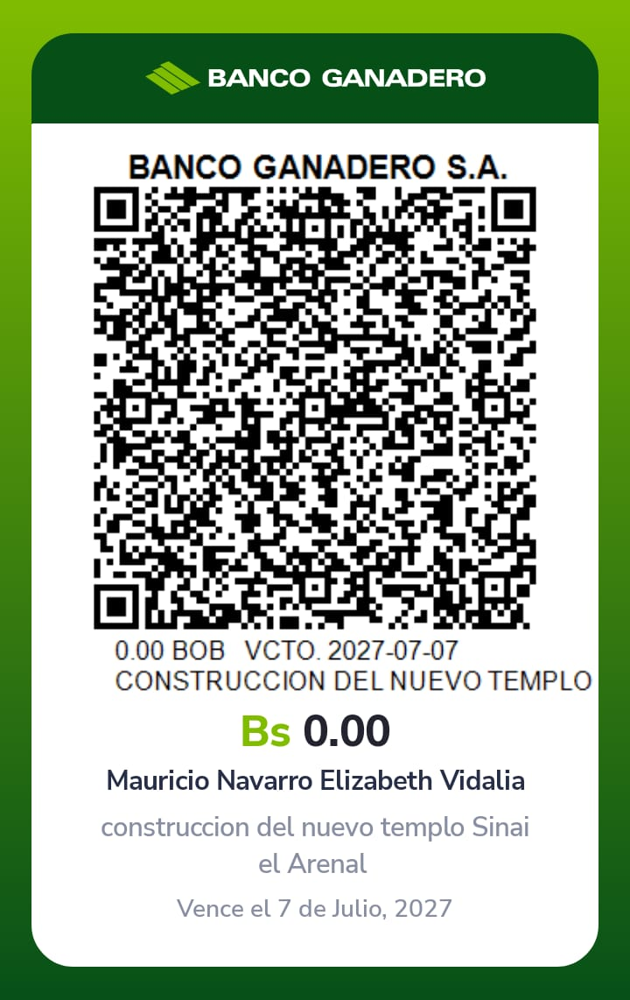

Tu colaboración es fundamental para hacer realidad este proyecto de fe y comunidad.
Ayúdanos a construir un nuevo templo para nuestra iglesia adventista. ¡Gracias por tu generosidad!
Escanea el código QR con tu celular para donar de forma segura:
Ubicacion del Lugar
Corazones Solidarios es una iniciativa dedicada a recaudar fondos para la construcción de un nuevo templo adventista. Con tu apoyo, construiremos un espacio de paz, fe y comunidad para todos.
Levantar un nuevo templo para fortalecer nuestra fe y comunidad.
Con tu donación, difundiendo este mensaje o siendo voluntario.
Dependerá del apoyo recibido, pero trabajamos día a día para lograrlo.
Estará abierto a toda la comunidad que desee compartir en fe y unidad.